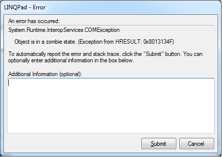

Do zombies exist ... in .NET?
I was having a discussion with a teammate about locking in .NET. He's a really bright guy with an extensive background in both lower-level and higher-level programming, but his experience with lower level programming far exceeds mine. Anyway, He argued that .NET locking should be avoided on critical systems expected to be under heavy-load if at all possible in order to avoid the admittedly small possibility of a "zombie thread" crashing a system. I routinely use locking and I didn't know what a "zombie thread" was, so I asked. The impression I got from his explanation is that a zombie thread is a thread that has terminated but somehow still holds onto some resources. An example he gave of how a zombie thread could break a system was a thread begins some procedure after locking on some object, and then is at some point terminated before the lock can be released. This situation has the potential to crash the system, because eventually, attempts to execute that method will result in the threads all waiting for access to an object that will never be returned, because the thread that is using the locked object is dead.
I think I got the gist of this, but if I'm off base, please let me know. The
concept made sense to me. I wasn't completely convinced that this was a real
scenario that could happen in .NET. I've never previously heard of "zombies",
but I do recognize that programmers who have worked in depth at lower levels
tend to have a deeper understanding of computing fundamentals (like
threading). I definitely do see the value in locking, however, and I have seen
many world class programmers leverage locking. I also have limited ability to
evaluate this for myself because I know that the lock(obj) statement is
really just syntactic sugar for:
bool lockWasTaken = false; var temp = obj; try { Monitor.Enter(temp, ref lockWasTaken); { body } } finally { if (lockWasTaken) Monitor.Exit(temp); }
and because Monitor.Enter and Monitor.Exit are marked extern. It seems
conceivable that .NET does some kind of processing that protects threads from
exposure to system components that could have this kind of impact, but that is
purely speculative and probably just based on the fact that I've never heard
of "zombie threads" before. So, I'm hoping I can get some feedback on this
here:
- Is there a clearer definition of a "zombie thread" than what I've explained here?
- Can zombie threads occur on .NET? (Why/Why not?)
- If applicable, How could I force the creation of a zombie thread in .NET?
- If applicable, How can I leverage locking without risking a zombie thread scenario in .NET?
Update
I asked this question a little over two years ago. Today this happened:

Answer
- Is there a clearer definition of a "zombie thread" than what I've explained here?
Seems like a pretty good explanation to me - a thread that has terminated (and can therefore no longer release any resources), but whose resources (e.g. handles) are still around and (potentially) causing problems.
- Can zombie threads occur on .NET? (Why/Why not?)
- If applicable, How could I force the creation of a zombie thread in .NET?
They sure do, look, I made one!
[DllImport("kernel32.dll")] private static extern void ExitThread(uint dwExitCode); static void Main(string[] args) { new Thread(Target).Start(); Console.ReadLine(); } private static void Target() { using (var file = File.Open("test.txt", FileMode.OpenOrCreate)) { ExitThread(0); } }
This program starts a thread Target which opens a file and then immediately
kills itself using ExitThread. The resulting zombie thread will never
release the handle to the "test.txt" file and so the file will remain open
until the program terminates (you can check with process explorer or
similar). The handle to "test.txt" won't be released until GC.Collect is
called - it turns out it is even more difficult than I thought to create a
zombie thread that leaks handles)
- If applicable, How can I leverage locking without risking a zombie thread scenario in .NET?
Don't do what I just did!
As long as your code cleans up after itself correctly (use Safe Handles or equivalent classes if working with unmanaged resources), and as long as you don't go out of your way to kill threads in weird and wonderful ways (safest way is just to never kill threads - let them terminate themselves normally, or through exceptions if necessary), the only way that you are going to have something resembling a zombie thread is if something has gone very wrong (e.g. something goes wrong in the CLR).
In fact its actually surprisingly difficult to create a zombie thread (I had to P/Invoke into a function that esentially tells you in the documentation not to call it outside of C). For example the following (awful) code actually doesn't create a zombie thread.
static void Main(string[] args) { var thread = new Thread(Target); thread.Start(); // Ugh, never call Abort... thread.Abort(); Console.ReadLine(); } private static void Target() { // Ouch, open file which isn't closed... var file = File.Open("test.txt", FileMode.OpenOrCreate); while (true) { Thread.Sleep(1); } GC.KeepAlive(file); }
Despite making some pretty awful mistakes, the handle to "test.txt" is still
closed as soon as Abort is called (as part of the finalizer for file which
under the covers uses SafeFileHandle to wrap its file handle)
The locking example in C.Evenhuis answer is probably the easiest way to fail
to release a resource (a lock in this case) when a thread is terminated in a
non-weird way, but thats easily fixed by either using a lock statement
instead, or putting the release in a finally block.
See also
- Subtleties of C# IL codegen for a very subtle case where an exception can prevent a lock from being released even when using the
lockkeyword (but only in .Net 3.5 and earlier) - Locks and exceptions do not mix
Suggest
I've cleaned up my answer a bit, but left the original one below for reference
It’s the first time I've heard of the term zombies so I'll assume its definition is:
A thread that has terminated without releasing all of its resources
So given that definition, then yes, you can do that in .NET, as with other languages (C/C++, java).
However , I do not think this as a good reason not to write threaded, mission critical code in .NET. There may be other reasons to decide against .NET but writing off .NET just because you can have zombie threads somehow doesn't make sense to me. Zombie threads are possible in C/C++ (I'd even argue that it’s a lot easier to mess up in C) and a lot of critical, threaded apps are in C/C++ (high volume trading, databases etc).
Conclusion If you are in the process of deciding on a language to use, then I suggest you take the big picture into consideration: performance, team skills, schedule, integration with existing apps etc. Sure, zombie threads are something that you should think about, but since it’s so difficult to actually make this mistake in .NET compared to other languages like C, I think this concern will be overshadowed by other things like the ones mentioned above. Good luck!
Original Answer Zombies† can exist if you don't write proper threading code. The same is true for other languages like C/C++ and Java. But this is not a reason not to write threaded code in .NET.
And just like with any other language, know the price before using something. It also helps to know what is happening under the hood so you can foresee any potential problems.
Reliable code for mission critical systems is not easy to write, whatever language you're in. But I'm positive it’s not impossible to do correctly in .NET. Also AFAIK, .NET threading is not that different from threading in C/C++, it uses (or is built from) the same system calls except for some .net specific constructs (like the light weight versions of RWL and event classes).
†first time I've heard of the term zombies but based on your description, your colleague probably meant a thread that terminated without release all resources. This could potentially cause a deadlock, memory leak or some other bad side effect. This is obviously not desirable but singling out .NET because of this possibility is probably not a good idea since it’s possible in other languages too. I'd even argue that it’s easier to mess up in C/C++ than in .NET (especially so in C where you don't have RAII) but a lot of critical apps are written in C/C++ right? So it really depends on your individual circumstances. If you want to extract every ounce of speed from your application and want to get as close to bare metal as possible, then .NET might not be the best solution. If you are on a tight budget and do a lot of interfacing with web services/existing .net libraries/etc then .NET may be a good choice.